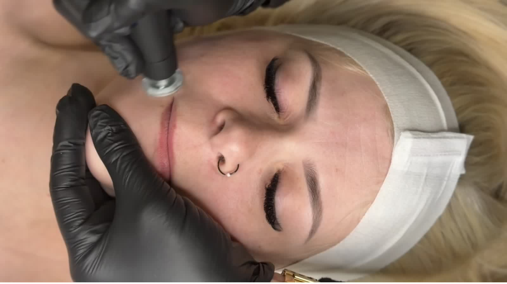

Skin health & prevention
Optimizing skin quality early, supporting barrier health and slowing visible change before it establishes.
Advanced regenerative treatments designed to restore skin health, improve texture and support long-term collagen renewal. Our approach focuses on true skin transformation — starting with a customized consultation and treatment plan.
Skin health is the foundation, not the finish.
Rather than surface-level treatments, our regenerative approach works within the skin to create lasting structural improvements — stimulating collagen, improving texture and restoring overall skin quality.
It is best suited to anyone experiencing fine lines, laxity, uneven texture or dullness, or anyone wanting genuine long-term skin improvement. Results develop progressively as the skin regenerates, and continue improving over time.
Every client enters here. We optimize skin health, collagen production and fibroblast activity across a treatment series, building the foundation everything else depends on.
With that foundation in place, advanced plasma work can target laxity and texture with precision — and skin that has been prepared heals better and holds results longer.

BioSkin Renewal · series-based
A customized regenerative skin program designed to improve tone, texture, elasticity and overall skin vitality from within. Using our BioSkin Renewal protocols, we focus on long-term skin health, not quick fixes.
It is delivered as a series because consistent treatment is what allows skin to rebuild and strengthen. Each session compounds on the last, which is why the programme is usually the foundation for everything that follows.
Build your renewal planOptimizing skin quality early, supporting barrier health and slowing visible change before it establishes.
Calming active concerns and improving overall skin behaviour rather than treating breakouts in isolation.
Evening tone and reducing visible irregularity across the face, neck and décolletage.
Stimulating collagen to improve firmness and smoothness as elasticity begins to change.
Restoring clarity, smoothness and light reflection to skin that has become uneven or tired.

Advanced plasma technology designed to target skin laxity, texture concerns and visible signs of aging through controlled regenerative stimulation. It allows us to treat concerns with precision while supporting the skin's natural renewal process.
Often paired with BioSkin Renewal for transformative outcomes, Precision Plasma is best suited to more advanced or highly specific concerns.
Explore your treatment pathEyelid rejuvenation, fine lines around the eyes and mouth, and smaller corrective treatments where precision matters most.
Tightening and definition across the lower third of the face and neck, where laxity tends to show earliest and most visibly.
A complete facial treatment addressing laxity, texture and visible aging across all zones in a planned, mapped procedure.
Our most extensive plasma procedure, treating the face and neck together for a cohesive result, with structured recovery support.
Candidacy, treatment depth and recovery are planned individually. Downtime varies with intensity and may include redness, swelling and light peeling during healing.
Collagen induction used alongside regenerative protocols to improve texture, scarring and overall skin quality.
Medical-grade yellow, red and blue light used to speed healing and recovery and to calm skin after treatment.
Advanced biostimulants that support cellular regeneration, collagen production and healing after procedures.
Skin regeneration works best when it is sequenced properly. A skin consultation is where we map your starting point and the order of treatment.